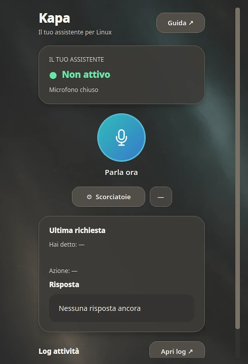

Kapa — Linux Voice Assistant
Open apps, control music and capture your screen by voice. Kapa brings Italian voice commands to your Linux desktop.
- Free
- Open source
- Italian voice commands only
Try saying these in Italian
- «Apri Firefox»
- «Abbassa il volume del 20%»
- «Registra lo schermo per 10 secondi»

What you can do with Kapa
Voice commands
Press the microphone button and ask Kapa to perform an action on your desktop.
Whisper Small
Transcribes speech locally, right on your computer.
Groq
Interprets requests online. A Groq API key is required.
Applications
Open or close apps such as Firefox and VLC with a voice command.
Media controls
Pause playback or adjust your system volume.
Screenshots
Capture a window or screen with the tools available on your desktop.
Screen recording
Start or stop recordings with OBS or GPU Screen Recorder when installed.
System management
Find packages and start updates on supported setups.
Show all features (in Italian)
File e cartelle
- Creare file
crea un file di testo con il contenuto richiesto.
- Scrivere nei file
aggiunge testo a un file esistente.
- Dettare testo
scegli un file, poi detta cosa aggiungere. «Annulla dettatura» annulla.
- Leggere file
legge il contenuto di un file di testo.
- Elencare file
mostra cosa contiene una cartella.
- Cercare file
cerca per nome, cartella o estensione.
- Creare cartelle
crea una cartella nella posizione richiesta.
- Copiare file
crea una copia in un'altra cartella.
- Spostare file
trasferisce un file nella cartella scelta.
- Rinominare file
cambia il nome di un file.
- Eliminare file
cancella un file; disponibile solo in modalità testuale.
- Svuotare il cestino
elimina il contenuto del cestino; solo in modalità testuale.
Multimedia e YouTube
- Impostare il volume
porta l'audio alla percentuale richiesta, da 0 a 100.
- Regolare il volume
alza, abbassa, silenzia o riattiva l'audio.
- Controllare musica e video
riproduce, mette in pausa, ferma o cambia traccia.
- Cercare su YouTube
apre i risultati nel browser.
- Aprire un video YouTube
apre il video trovato; senza chiave YouTube mostra la ricerca.
- Ripetizione e riproduzione casuale
«ripeti la traccia», «ripeti la playlist», «disattiva ripetizione», «attiva riproduzione casuale», «disattiva riproduzione casuale». «Ricomincia il brano» riporta il brano all'inizio. Questi comandi sono locali; il supporto dipende dal player.
- Scelta automatica del lettore
Kapa dà priorità alle sessioni multimediali dei browser disponibili tramite MPRIS (Brave, Firefox, Chromium e altri), scegliendo prima quelle in riproduzione, poi quelle in pausa. Se non rileva browser, sceglie tra i lettori disponibili come Spotify o VLC, con lo stesso ordine. A parità usa l'ordine di rilevamento, senza chiedere quale lettore usare. Un lettore che non risponde non blocca gli altri. Puoi comunque indicare un nome: «metti in pausa Spotify», «metti play su Firefox», «prossima traccia su VLC». Il nome esplicito prevale sulla scelta automatica. Un browser aperto senza sessione MPRIS non è rilevabile come lettore; non viene avviato un lettore assente.
Schermo, registrazioni e replay
- Fare screenshot
salva il monitor principale, uno specifico, tutti i monitor o la finestra attiva, se supportato.
- Avviare una registrazione
usa GPU Screen Recorder se installato, altrimenti OBS; puoi chiedere esplicitamente OBS. GSR salva in MP4 con video H.264 e audio AAC; OBS usa le proprie impostazioni.
- Fermare una registrazione
interrompe la cattura e salva il video.
- Registrare per un tempo preciso
registra da 1 a 600 secondi, poi salva automaticamente.
- Attivare il buffer di replay
mantiene pronti gli ultimi secondi dello schermo; con GSR puoi scegliere da 1 a 600 secondi, con OBS usa la durata configurata in OBS.
- Salvare il replay
salva gli ultimi secondi catturati dal replay attivo.
- Fermare il buffer di replay
disattiva la cattura degli ultimi secondi.
Applicazioni e sistema
- Aprire applicazioni
avvia un programma installato.
- Verificare applicazioni
controlla se un programma è installato.
- Chiudere applicazioni
chiede la chiusura del programma indicato.
- Cercare pacchetti
cerca programmi nei repository della distribuzione.
- Installare programmi
apre un terminale per conferma ed eventuale password.
- Aggiornare il sistema
apre la procedura prevista per la distribuzione, con conferma.
Ricerca, appunti e notifiche
- Cercare su Google
apre i risultati nel browser predefinito, senza chiavi API Google.
- Mostrare notifiche
visualizza un messaggio sul desktop.
- Copiare testo negli appunti
prepara il testo da incollare altrove.
- Leggere gli appunti
mostra il testo attualmente copiato.
- Impostare promemoria
mostra una notifica dopo il tempo richiesto; l'assistente deve restare attivo.
Voce e conversazione
- Ricordare la conversazione
mantiene il contesto durante la sessione; al riavvio riparte da zero.
- Mostrare i comandi
scrivi «aiuto» nel terminale per vedere l'elenco disponibile.
- Parlare su richiesta
premi «Parla ora» o la scorciatoia; il microfono resta chiuso quando non ascolta.
- Configurare la scorciatoia
il pulsante «Scorciatoie» aiuta a scegliere il tasto nel desktop.
- Capire l'ultima richiesta
la finestra mostra la frase trascritta, l'azione richiesta, il risultato e se è stata usata l'elaborazione locale o Groq. Il registro strutturato resta sul computer, senza audio.
- Comandi locali
play, pausa, traccia successiva/precedente, stop, volume, screenshot, replay, apertura delle app più comuni, lettura degli appunti e registrazione dello schermo (anche a tempo) funzionano senza chiamate a Groq quando la frase è riconosciuta. Richieste complesse o con più azioni passano a Groq.
Finestra e avvio
- Aprire la GUI
doppio clic su «Kapa.desktop».
- Evitare doppie aperture
altri clic sull'avviatore richiamano la finestra già aperta.
- Modalità compatta
rimpicciolendo la finestra resta solo il microfono; riallargandola tornano tutti i comandi.
- Avvio automatico
aprendo la GUI parte anche l'assistente, con il microfono chiuso.
- Restare in background
chiudendo la finestra, rimane nel tray se il desktop lo supporta.
- Uscire completamente
clic destro sull'icona nel tray → «Chiudi».
How it works
Download
Open GitHub Releases, download the Kapa ZIP and extract it to a permanent folder in your home directory.
Install
Open a terminal in the extracted folder and run this command as a regular user.
bash installa.shSet up
Add your Groq key to the hidden .env file and open Kapa from your application menu. Whisper Small downloads the first time you use voice input.
Tested Linux desktops
- NobaraKDE
- UbuntuGNOME
- Linux MintCinnamon
Support the project
Kapa grew out of my passion for computing, a few offbeat ideas, and a healthy dose of vibe coding.
When my five kids give me a bit of breathing room, I enjoy tinkering with it and dreaming up new features. 😁
The project is completely free. Donations are always optional and help me spend more time on it and let it grow.